Aprendizado de Máquina
Ideia Central
- Aprender com regularidades nos dados
- Usar exemplos passados para estimar o futuro
- Medir similaridade entre objetos
Exemplo Intuitivo
- Reconhecer objetos por características
- Comparar com biblioteca de exemplos
- Escolher o mais parecido
Diferentes Tipos de Aprendizado
Supervisionado
- os pesos são ajustados minimizando o erro entre a saída esperada e a saída estimada no conjunto de dados de treinamento.
Não Supervisionado
- não utiliza saídas rotuladas. Os pesos são otimizados com base em critérios gerais, como similaridade, densidade, recompensa ou estrutura dos dados.
Causalidade vs. Correlação
- Pessoas que bebem refrigerante diet costumam estar acima do peso.
- O classificador pode dizer: "Pare de beber diet para emagrecer".
- Erro: A condição (obesidade) causou a escolha do refrigerante, não o contrário.
Outras considerações
- O que realmente importa no dado?
- Nem todo atributo ajuda na decisão
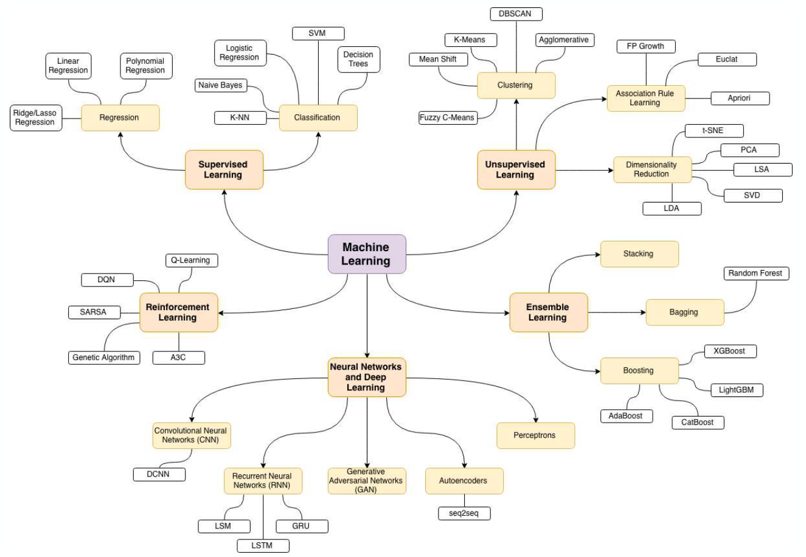
Aprendizado Supervisionado
Plano do curso
- Resumo dos conceitos básicos de aprendizado de máquina
- Cada vez mais algoritmos
- Gradient Boosting
- Redes neurais
- Seleção de características
- Explicabilidade
Avaliação
- Exercícios avaliados
- 2 provas
- 2 projetos
Aprendizado supervisionado
Princípio
- Dado um conjunto de N exemplos {(xi, yi) ∈ 𝒳 × 𝒴, i = 1..N}, de treinamento, busca-se uma função de previsão tal que y = f(x).
- O aprendizado é supervisionado, pois os rótulos são conhecidos
- Exemplos
- Classificação de imagens
- Previsões: temperatura, clima, ações...
Regressão e classificação
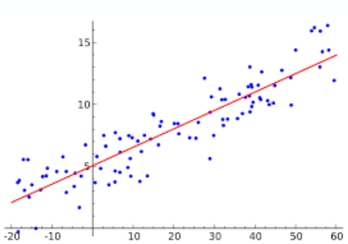
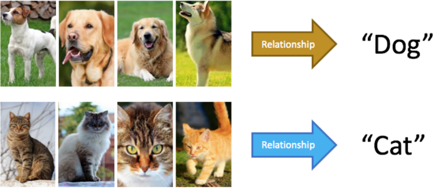
Aprendizado supervisionado
- Regressão
- Nós falamos de regressão quando 𝒴 é um sub-conjunto de \(\mathbb{R}^d\)
- Frequentemente, avaliamos os modelos ao calcular o erro quadrático: \( (y-f(x))^2 \)
- Classificação
- O espaço para predição 𝒴 é um conjunto discreto
- Classificação binária card(𝒴)= 2
- Classificação multiclasse card(𝒴)> 2
- Frequentemente, avaliamos os modelos ao calcular a acurácia
Função de perda (loss)
- Estimar o erro da predição f(x) em relação aos dados reais y
- Por convenção: \( L(y,f(x)) = \begin{cases} 0 & \text{if } y = f(x)\\ > 0 & \text{if } y \neq 0 \end{cases} \)
- Erro da predição esperado\(R_{true}(f) = \int_{𝒳𝗑𝒴} L(y,f(x))p(x,y)dxdy \)
- Objetivo: achar a função que minimiza o erro \(f* = \text{arg min}_{f \in \mathbb{H}} R_{true}(f) \)
Erro
- O erro real é impossível de ser calculado porque não sabemos a distribuição real dos dados
- Usar o erro empírico, que estima a loss em um dataset de treinamento: \[ R_{emp} = \frac{1}{N} \Sigma_i^n L(y_i,f(x_i)) \]
Algumas funções de loss
- Erro 0-1 (mais adequado para classificação) \[ L(Y,f(X)) = \begin{cases} 0 & \text{if } y = f(x)\\ 1 & \text{otherwise} \end{cases} \]
- Erro quadrático (mais adequado para regressão) \( L(Y,f(X)) = (Y-f(X))^2 \)
- Erro l1 (erro absoluto, mais adequado para regressão) \( L(Y,f(X)) = | Y-f(X) | \)
- Erro de Hinge (mais adequado para classificação) \( L(Y,f(X)) = max(0,1-yf(x)) \)
Gráficos
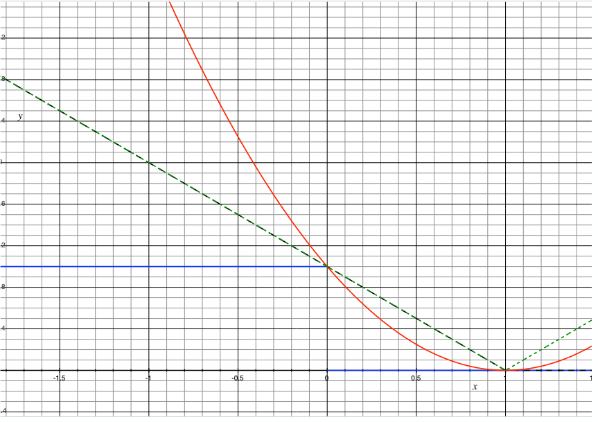
A Premissa da Similaridade
A ideia base: "Diga-me quem são seus vizinhos e eu direi quem você é."
Se um ponto desconhecido está cercado por exemplos da classe A, a hipótese mais simples é que ele também seja da classe A.
Como medir a "Vizinhança"?
A distância entre o ponto P e o exemplo E em n dimensões:
- Cada característica (eixo) deve ter a mesma escala.
- Problema: Se uma escala for 0-1 e outra 0-1000, a maior dominará o cálculo.
- Possível solução: Z-Score ou Min-Max Scaling.
- A "melhor" métrica de distância varia de acordo com o problema.
- Euclidiana
- Manhattan
- Minkowski
- Cosseno
K-Nearest Neighbors (KNN) - classificação
- Calcular a distância de um ponto contra os pontos da base de dados de treinamento
- Selecionar os k mais próximos
- Calcular o número de pontos em cada uma das classes
- Escolhe a classe com maior número de votos
- Classificar o ponto nessa classe
Resumo do funcionamento
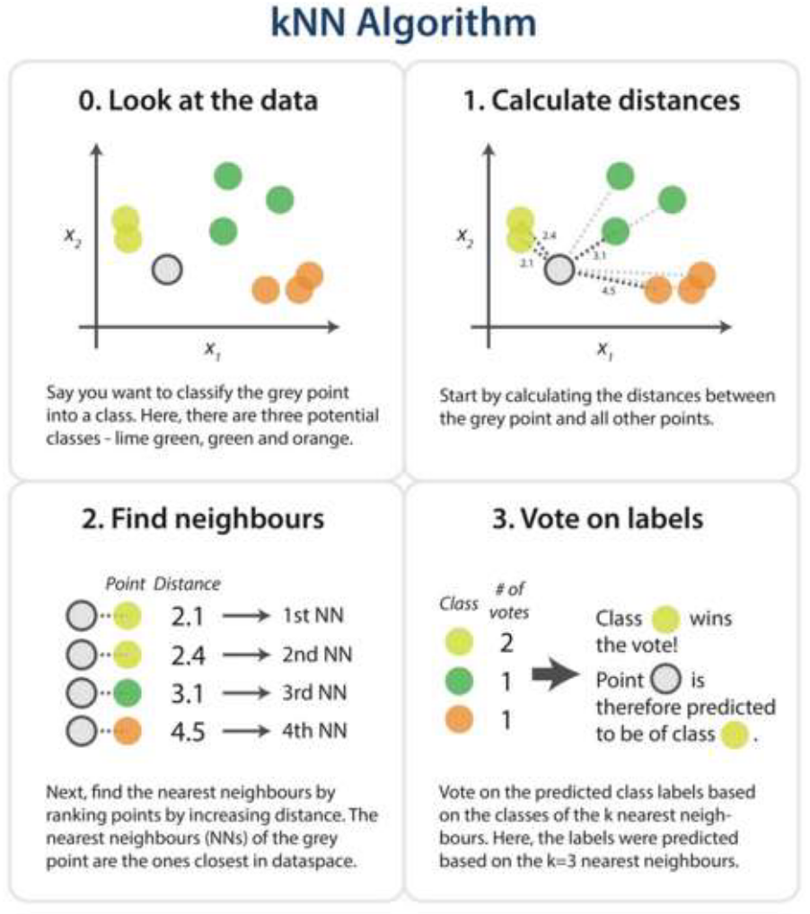
K-Nearest Neighbors (KNN) - regressão
- Calcular a distância de um ponto contra os pontos da base de dados de treinamento
- Selecionar os k mais próximos
- Estimar o valor esperado pela média dos k pontos
Resumo do funcionamento
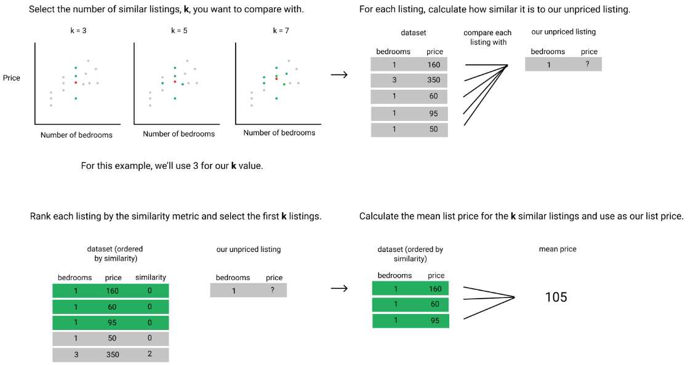
Métodos para regressão
- Linear
- Logística
- Máquina de vetores de suporte (SVM,support-vector machine)
Regressão Linear
Utilizada para encontrar uma relação linear entre uma variável alvo e um conjunto de atributos.
Objetivo
Modelar matematicamente a relação entre as entradas e a saída.
Hipóteses
- A variável alvo deve ser uma combinação linear das features.
- As variáveis explicativas devem seguir, idealmente, uma distribuição normal.
Tipos de Regressão Linear
Linear simples
Utiliza apenas uma variável explicativa.
Linear múltipla
Utiliza múltiplas variáveis.
Regressão linear simples
Encontrar os coeficientes a e b que minimizem o erro entre um alvo \(Y \in \mathbb{R}^N\) que seja linearmente dependente de um dado observacional \(X \in \mathbb{R}^{Nx1} \) independente
\(Y = aX + b\)
Regressão linear múltipla
Generalização da regressao linear simples para múltiplas variáveis \(X \in \mathbb{R}^{Nxd} \)
\(Y = \beta_0 + \beta_1 X_1 + \beta_2 X_2 ... + \beta_d X_d + \epsilon \)
Os coeficientes \( \beta \) são obtidos por algum algoritmo de otimização, como o gradiente descendente
Regressão Logística - base
- Aplicação da regressão linear para a classificação binária
- Utiliza uma função sigmóide (logística) para estimar a probabilidade de pertencimento a uma classe
- Saída entre 0 e 1
- Se o valor é 0.5, classe 1
- Senão, classe 0

Regressão Logística
- É uma forma paramétrica de estimar uma distribuição de probabilidades P(Y| X) onde \(Y \in \mathbb{R}^N\) é o espaço a estimar e \(X \in \mathbb{R}^{Nxd}\) é o espaço de atributos
- Podem ser escritos como: \[ P(Y = 1 |X) = \frac{1}{1+exp(\beta_0+\Sigma_{i=1}^{d} \beta_i X_i)}) \] e \[ P(Y = 0 |X) = \frac{exp(\beta_0+\Sigma_{i=1}^{d} \beta_i X_i}{1+exp(\beta_0+\Sigma_{i=1}^{d} \beta_i X_i)}) \]
- Os coeficientes \(\beta_i\) são otimizados para maximizar a semelhança condicional dos dados, ou seja, a probabilidade de existência de uma Observação Y na base de dados
Regressão Logística - multiclasse
- Estratégia "um contra todos"
- Achar um modelo que separe bem 1 classe das demais
- Separação de 3 classes "[green, blue, red]"
- 1 modelo logístico para: green vs [blue+red]
- 1 modelo logístico para: blue vs [green+red]
- 1 modelo logístico para: red vs [blue+gren]

Obtemos uma segmentação do espaço ao combinar os diferentes modelos
Prós e contras
- Prós:
- Facilidade de interpretação
- Eficiente computacionalmente
- Pouco sensível ao sobreajuste
- Não necessita de normalização (transformação dos dados em pré-processamento)
- Contras:
- Supõe linearidade
- Sensível ao desiquilibrio na quantidade de dados por classes
- Performance decai a medida que os dados ficam mais complexos
- Sensível a dados atípicos
Métodos para classificação
- Árvores de Decisão
- Floresta aleatória (random forest)
Árvores de Decisão
- Explicar um valor a partir de uma série de variáveis discretas ou contínuas.
- Estamos, portanto, diante de um caso muito clássico de matriz X com m observações e n variáveis, associada a um vetor Y a ser explicado. Os valores de Y podem ser de dois tipos:
- contínuos: árvore de regressão
- qualitativos: árvore de classificação
Exemplo - iris

Árvore de Decisão - iris

Árvore de Decisão - construção
- Como definir o tamanho da árvore:
Escolher a variável de divisão: selecionando as variáveis, da mais discriminante à menos discriminante
Como lidar com variáveis contínuas: “Dividir” a variável contínua para que seus valores inferiores e superiores caractarizem nós distintos.
encontrar o equilíbrio entre sobreaprendizado e árvore trivial. Processo de pós-poda.
em função des algoritmos CHAID (Chi-2), CART e C4.5 sobre o índice, do gini (índice de concentração) e sobre o conceito de entropia (teoria da informação)
Construção com o Gini
- Cálculo do índice de Gini no conjunto completo: \[ Gini(D) = 1 - \Sigma_{i-1}^k P_i^2 \]
- \( P_i = \frac{Nb_{classe_i}}{Nb_{lines}} \): probabilidade de pertencer à classe i
- O índice de Gini mede, portanto, a incerteza em um conjunto de dados:
- Se for zero, o conjunto tem só uma única classe
- Quanto maior for, mais diversificado o conjunto é em termos de classes
Construção com o Gini

- Calcular o índice para o conjunto todo (successes)
- P(sim)= 5/10
- P(não)= ?/10
- \(Gini(D)= 1 - (5/10)^2 - (5/10)^2\) = ?
Construção com o Gini
- Selecionar o atributo para a divisão
- Calcular o valor Gini ponderado para cada atributo:
- \( Gini_{ponderado}= \Sigma_{j=1}^k \frac{N_j}{N}Gini(j) \)
- onde \(k\) é o número de nós filhos resultante da atribuição
- \(N_j\) é o número de amostras no nó filho
- \(N\) é o número de amostras no nó pai
- \(Gini(j)\) é índice do nó filho \(j\)
- Selecione o atributo com o menor índice
Para o atributo "Revision time"

- "High": 4 - \(Gini_{high} = 1 - (2/4)^2 - (2/4)^2 = 0.5\)
- "Medium": 3 - \(Gini_{medium} = 1 - (2/3)^2 - (1/3)^2 = 0.444\)
- "Low": 3 - \(Gini_{low} = 1 - (1/3)^2 - (2/3)^2 = 0.444\)
"Revision time": \( 4/10 * 0.5 + 3/10 *0.444 + 3/10 *0.444 = 0.4664 \)
Para o atributo "Break time"

- "High": 3 - \(Gini_{high} = 1 - (3/3)^2 - (0/3)^2 = 0.\)
- "Medium": 3 - \(Gini_{medium} = 1 - (2/3)^2 - (1/3)^2 = 0.444\)
- "Low": 4 - \(Gini_{low} = 1 - (0/4)^2 - (4/4)^2 = 0.\)
"Break time": \( 3/10 * 0. + 3/10 *0.444 + 4/10 *0. = 0.1332 \)
Seleção de atributos - pt. 1
- "Revision time": \( 4/10 * 0.5 + 3/10 *0.444 + 3/10 *0.444 = 0.4664 \)
- "Break time": \( 3/10 * 0. + 3/10 *0.444 + 4/10 *0. = 0.1332 \)
- Selecionamos "Break time", porque ele tem o valor menor.
- O atributo "Low": tem o menor valor, 0. e mais elementos, 4.
Seleção de atributos - pt. 2
- Atribuição de classes por probabilidade de valor


Recomeço - "Class = No" - pt. 1

- "High": 2 - \(Gini_{high} = 1 - (3/2)^2 - (0/2)^2 = 0.\)
- "Medium": 2 - \(Gini_{medium} = 1 - (2/2)^2 - (0/2)^2 = 0.\)
- "Low": 2 - \(Gini_{low} = 1 - (1/2)^2 - (1/2)^2 = 0.5\)
Recomeço - "Class = No" - pt. 2
- "High": 3 - \(Gini_{high} = 1 - (3/3)^2 - (0/3)^2 = 0.\)
- "Medium": 3 - \(Gini_{medium} = 1 - (2/3)^2 - (1/3)^2 = 0.444\)
- "Low": 0 - \(Gini_{low} = 1 - (0/4)^2 - (4/4)^2 = 0.\)
Recomeço - "Class = No" - pt. 3
- "Revision time": \( 0.16667 \)
- "Break time": \( 0.2222 \)
Agora, selecionamos "Revision time" - atributo "high"


Prós e contras
- Prós:
- Facilidade de interpretação
- Não é necessária normalização
- Tratamento de valores ausentes
- Flexibilidade com tipos de dados
- Contras:
- Forte tendência ao sobreaprendizado
- Instabilidade diante da variabilidade dos dados
- Complexidade computacional
- Sensível ao ruído
Floresta aleatória (Random Forest)
Ensemble Learning com Árvores de Decisão
Combinação de múltiplas árvores para obter estimativa mais precisas e generalizáveis.
Várias árvores \(\to\) floresta...
Introdução às Métodos Ensemble
"Se apenas um médico recomendar uma cirurgia, você provavelmente procurará uma segunda opinião."
Floresta aleatória segue exatamente esse princípio: combinar vários modelos independentes.
- Múltiplos especialistas
- Visões complementares
- Decisão final por consenso (agregação)
Por que usar vários modelos?
Árvore Única
- Mais sensível à ruídos
- Maior variância
- Overfitting
Floresta aleatória
- Menor variância
- Maior generalização
Floresta aleatória (random forest)
Random
Cada árvore é treinada usando dados e atributos selecionados aleatoriamente.
Forest
Conjunto de árvores de decisão.
As duas fontes de aleatoriedade
Bagging
- Linhas aleatórias
Feature Sampling
- Colunas aleatórias
Função de agregação
- Classificação: voto
- Regressão: média
Algoritmo de Treinamento
- Gerar uma amostra bootstrap
- Treinar uma árvore
- Selecionar atributos aleatórios em cada nó
- Repetir N vezes
- Combinar todas as árvores
Exemplo - pt. 1
Seleciona um primeiro grupo de dados aleatoriamente
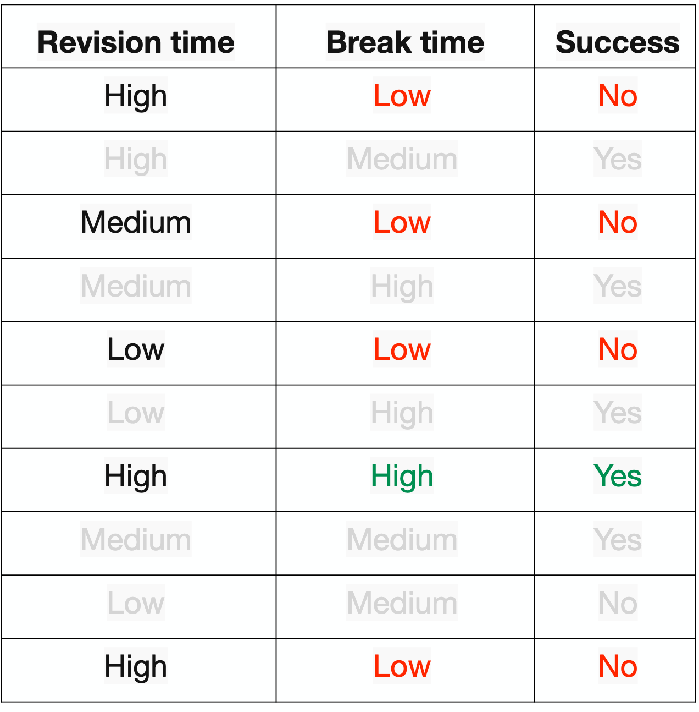
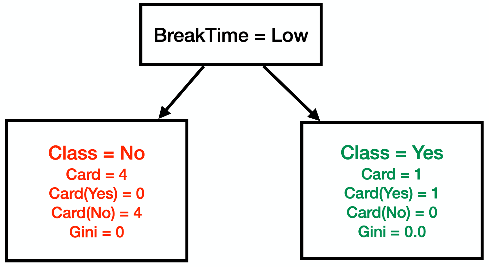
Exemplo - pt. 2
Seleciona um outro grupo de dados aleatoriamente
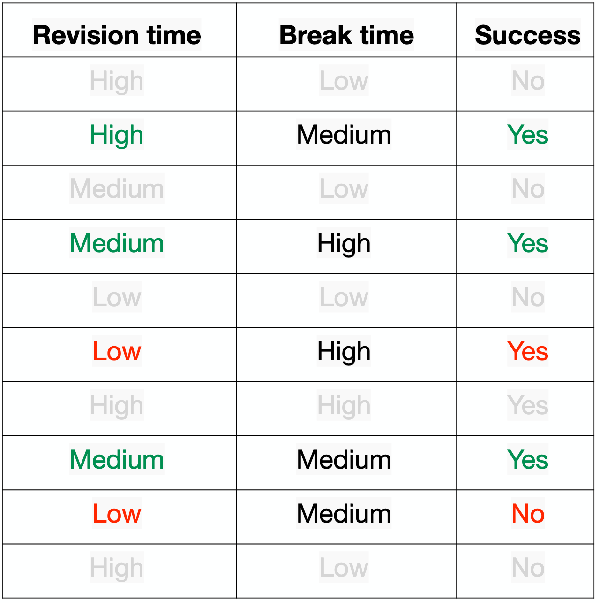
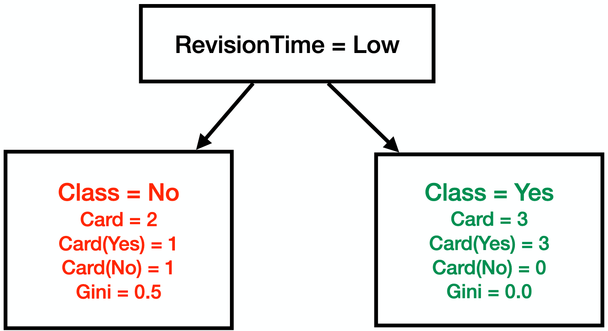
Exemplo #1 - voto
Cada ávore faz a sua estimativa:
- Estudante com:
- RevisionTime = Medium
- BreakTime = Medium
Voto: YES
Voto: YES
Classificação: Yes
Prós e contras
- Prós:
- Menor sobreaprendizado em comparação com árvores de decisão
- Maior precisão
- Gerenciamento de valores ausentes
- Flexibilidade com tipos de dados
- Capaz de lidar com volumes muito grandes de dados
- Contras:
- Complexidade computacional
- Baixa interpretabilidade
- Muitos hiperparâmetros
- Risco de sobreaprendizado
Exemplo #2 - voto
Cada ávore faz a sua estimativa:
- Estudante com:
- RevisionTime = High
- BreakTime = Low
Voto: NO
Voto: YES
Classificação: aleatoria entre No/Yes
Aprendizado não supervisionado
Aprendizado não supervisionado
Princípio
- Apenas as especificações {xi ∈ 𝒳, i = 1..N}, estão disponíveis.
- Procuramos descrever como os dados estão organizados e extrair os subconjuntos homogêneos.
- Exemplos
- Reconhecimento de formas
- Análise espacial
- Categorização de documentos
- Categorização de uso (web, personalização, etc.)
Plano do curso
- Aprendizado não supervisionado
- Agrupamento (hierárquico, K-Means)
- Redução de dimensionalidade (PCA, t-SNE)
Avaliação
- Exercícios avaliados
- 2 provas
- 2 projetos
Exemplos
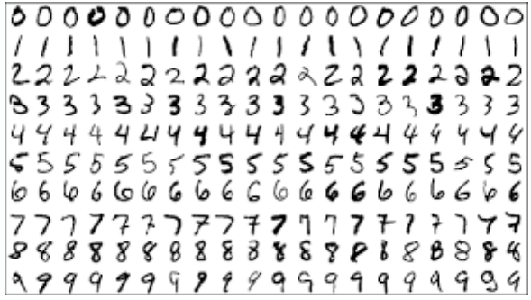
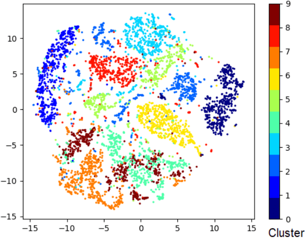
Agrupamento de dados
- Introdução
- Reconhecimento de formas
- Análise espacial
- Métodos de agrupamento de dados (clustering)
- Agrupamento de dados hierárquicos
- K-Means
- Redução de dimensionalidade
- PCA
- t-SNE
introdução
- Seja um grupo de exemplos de treinamento 𝒟 = {xi ∈ ℝd}i=1N
- Objetivo: Estruturar os dados em categorias homogêneas
- Agrupar os dados em grupos de forma que os dados de um grupo sejam o mais semelhantes possível
Aplicações
- Mineração de texto
- Resumos
- Classificação automática em pastas
- Mineração de grafos
- Subredes sociais
- Bioinformática
- Similaridade de genes
- Marketing
- Segmentação de clientes
- Perfil de usuários
- Segmentação de imagens
- áreas homogêneas de uma imagem
Exemplos
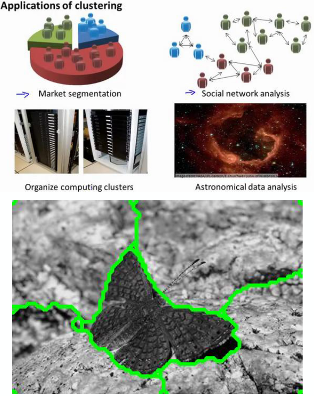
O que é um agrupamento de dados?
- Algoritmos/métodos que permitem achar enconrtar e agrupar informações similares
- Como definir a semelhança entre exemplos?
- Como caracterizar um agrupamento?
- Quantos grupos devemos encontrar?
- Que algoritmo utilizar?
- Como avaliar o resultado?
Métricas de similaridade
- Funções de 2 paramêtros (x1,x2) que retornem um valor ℝ+ tal que:
- D(x1,x2) = D(x2,x1) ≥ 0
- D(x1,x2) = 0 ⟹ x1=x2
- Métricas de distância entre 2 pontos x1 e x2:
- Distância de Minskoswski:
D(x1,x2)q = Σdj=1|x1,j - x2,j |q - Distância euclidiana ao quadrado (q=2):
D(x1,x2)2 = Σdj=1|x1,j - x2,j |2 = (x1 - x2)T(x1 - x2) - Distância de Manhattan (q=1):
D(x1,x2) = Σdj=1|x1,j - x2,j |
Similaridade entre grupos
- Distância D(𝒞1,𝒞2) entre 2 grupos 𝒞1 e 𝒞2:
- Diâmetro mínimo (mais próximo do vizinho):
Dmin(x) = min{D(xi,xj)}, xi ∈ 𝒞1, xj ∈ 𝒞2} - Diâmetro máximo:
Dmax(x) = max{D(xi,xj)}, xi ∈ 𝒞1, xj ∈ 𝒞2}
Exemplo
- Distância D(𝒞1,𝒞2) entre 2 grupos 𝒞1 e 𝒞2:
- Distância média:
\[D_{média}(𝒞_1,𝒞_2) = \frac{ \sum x_i \in 𝒞_1\sum x_j \in 𝒞_2 D(x_i,x_j) }{n_{1}n_{2}}\] - Método de Ward:
\[ D_{ward}(𝒞_1,𝒞_2) = \sqrt{\frac{n_1n_2}{n_1+n_2}}D(\mu_i,\mu_2) \]
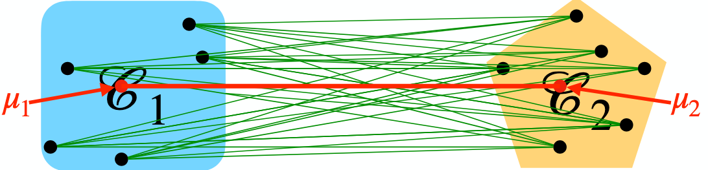
Características de um bom agrupamento
- Minimize a inércia e maximize a distorção
- Cada grupo 𝒞l tem como:
- Centróide: \(\mu_l = \frac{1}{n_l} \Sigma_{i \in 𝒞_l}x_i \) onde \(n_l = card(𝒞_l)\)
- Inércia: \(J_l = \Sigma_{i \in 𝒞_l}D^{2} (x_i,\mu_l) \)
- Tal
- Inércia: Distância média dentro de um grupo:
\( J_{intra} = \Sigma J_l \) onde \( n_{𝒞} = card(𝒞) \) - Distorção: Distância entre grupos: \( J_{inter} = \Sigma n_l D^2(\mu_l,\mu) \) onde \( \mu = \frac{1}{N}\Sigma_i x_i \)
Exemplo
- Inércia e Distorção
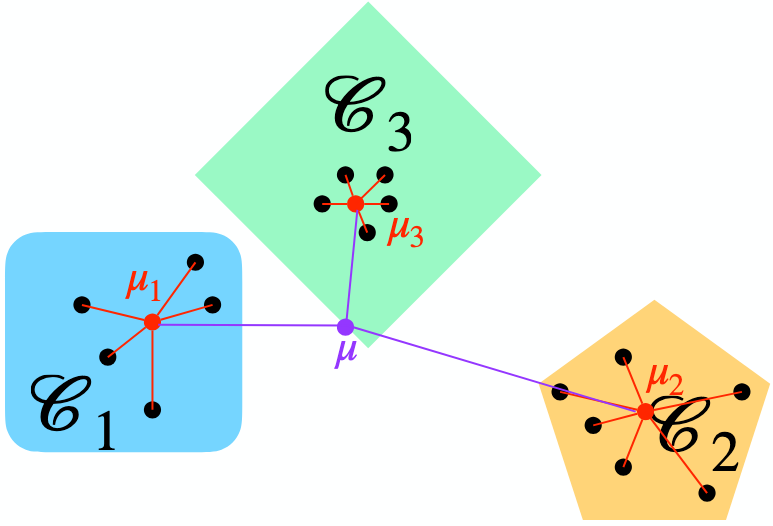
Cluster Hierárquico
- Cada ponto ou grupo é agrupado ao ponto/grupo mais próximo
- Algoritmo:
- inicialização:
- Cada ponto da base de dados representa um grupo (cluter)
- Cada grupo é adicionado à lista de grupos \(L_{𝒞}\)
- Repetir até que \(card(L_{𝒞})=1\):
- Calcular a distância entre cada grupo da lista
- Cada grupo é adicionado à lista de grupos
- Escolher os dois grupos \(𝒞_i\) e \(𝒞_j\) que tenham a menor distância
- Combinar os dois grupos \(𝒞_i\) e \(𝒞_j\) em um novo \(𝒞_k\)
- Retirar \(𝒞_i\) e \(𝒞_j\) da lista, adicionar \(𝒞_k\) na lista
Exemplo
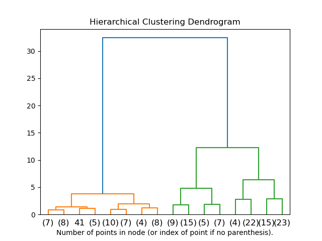
Exemplo interativo
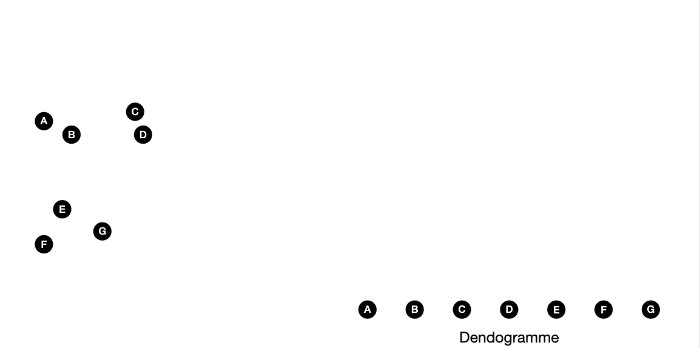
Passo 1
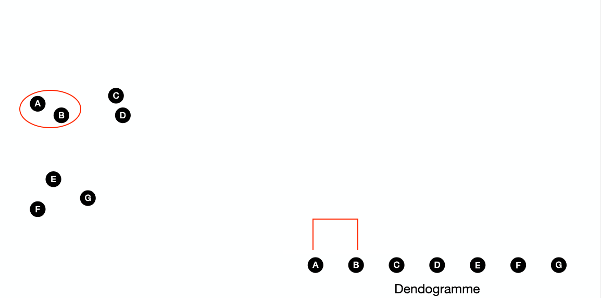
Passo 2
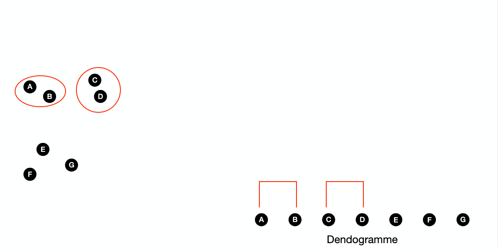
Passo 3
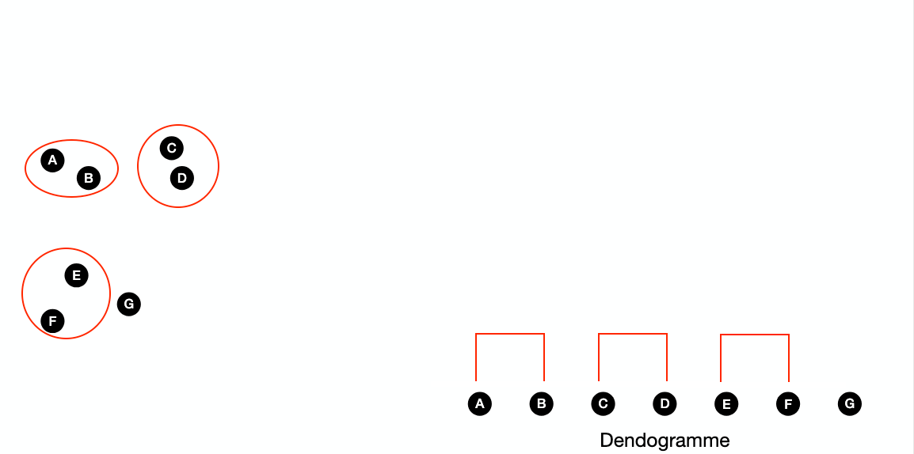
Passo 4
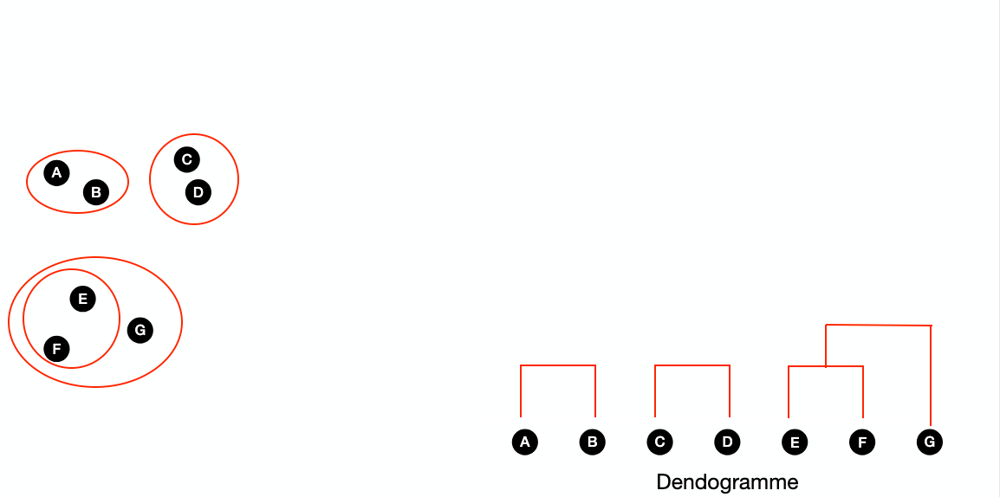
Passo 5
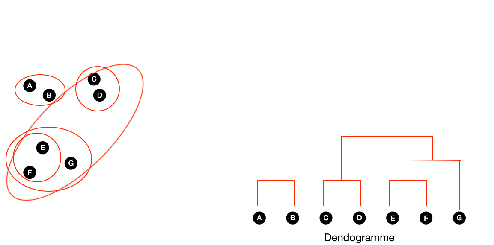
Passo 6
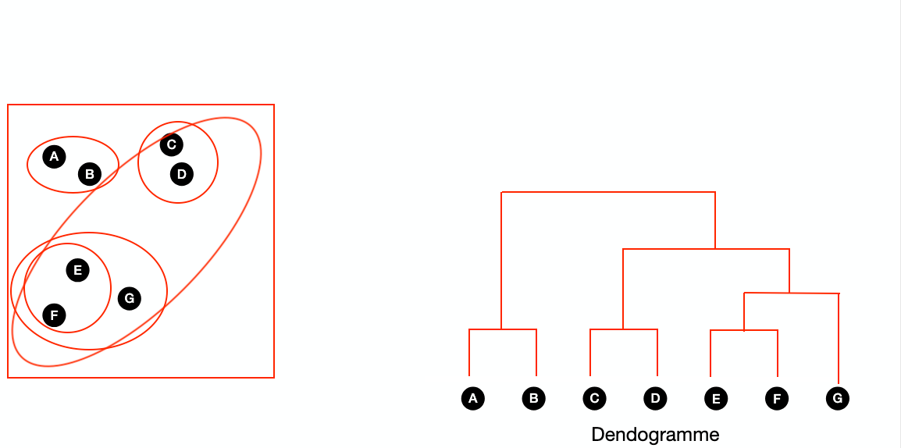
K-means
- Encontrar a melhor partição de K grupos de uma base de dados
- Algoritmo:
- inicialização:
- Seja uma base de dados D =\( {x_i \in \mathbb{R}^d}^{N}_{i=1}\)
- Encontre os centróides \( \mu_k\) dos grupos \(𝒞_k \) para k=1..K, K < N
- Repetir até convergir:
- \(x_i\), i = 1..N é atribuido ao grupo \(𝒞_k \) cujo o centróide \(\mu_k \) é o mais próximo
- Recalcular os centróides \(\mu_k \) dos grupos \(𝒞_k \) para k=1..K
Exemplo interativo
- Jupyter notebook
Redução de dimensionalidade
- Seja \(X \in \mathbb{R}^{Nxd}\) uma base de dados (N pontos cada com d dimensões
- Objetivos:
- Encontrar uma projeção de \(X \in \mathbb{Z}\) dado q < d
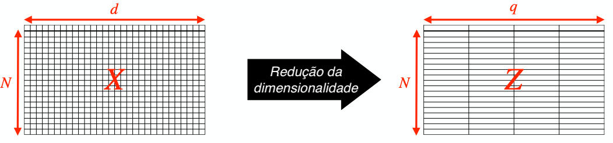
Utilizações - 1
- Visualização de dados
- Identificação de dados atípicos
- Visualizar dados com suas etiquetas (labels)
- Sempre há perda de informações
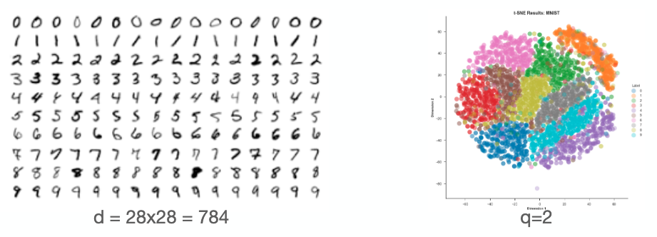
Utilizações - 2
- Reduzir tempo de cálculo
- Reduzir ruído
- Sempre há perda de informações
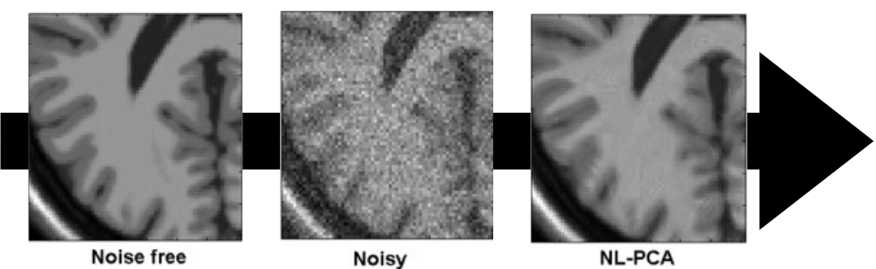
Idéia central
- Projetar dados \({x_i \in \mathbb{R}^d}$^{N}_{i=1}\) em \({z_i \in \mathbb{R}^q}$^{N}_{i=1}\) preservando ao máximo:
- A distância entre os dados
- A vizinhança (organização topológica)
- Existem 2 tipos de métodos:
- Redução linear: Análise do componente principal (PCA, em inglês)
- Redução não-linear: Stochastic Neighbor Embedding (SNE)
PCA - Etapa 1: Normalização dos dados
- Normalizar os intervalos de valores de cada uma das variáveis do conjunto de dados
- Minimizar a variância das variáveis iniciais para a continuação do algoritmo \[ \{x_i \in \mathbb{R}^d\}^{N}_{i=1} \to \{x_{ij}= \frac{x_{ij}- \bar{x_j}}{\sigma_j},j=1,..,d\} \]
PCA - Etapa 2: cálculo da matriz de covariância
- covariância entre duas variávies \(y \in \mathbb{R}^B\) e \(y \in \mathbb{R}^N\):
- Matrizes de covariância de 3 variávies (x,y,z) \(\in \mathbb{R}^3 \)
- Se \(\sigma(x,y) > 0\), quando X aumenta, y também aumenta
- Se \(\sigma(x,y) < 0\), quando X aumenta, y diminui
-
\[
\sigma(x,y)=\sigma(y,x)=\frac{1}{N-1} \Sigma^{N}_{i=1} (x_i - \bar{x})(y_i - \bar{y})
\]
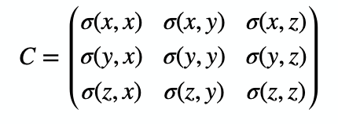
PCA - Etapa 3: cálculo dos vetores e valores próprios
- Noção de vetores e valores próprios:
- Conceito algébrico que permite transfomar linearmente matrizes
- Achar vetores próprios \(X \in \mathbb{R}^d\) e seu valores próprios \(\lambda \in \mathbb{R}\) tais que \(AX = \lambda X\) dado \( A \in \mathbb{R}^{dxd}\), uma matriz quadrada
- Resolver o sistema de equações (\(A - \lambda I)X=0\) com \(I \in \mathbb{R}^d\) a matrix identidade
PCA - Etapa 3: cálculo dos vetores e valores próprios
- A aplicação à matriz de covariância permite determinar as componentes principais dos dados
- Componentes principais:
- Construção linear das variáveis iniciais
- As novas variáveis (componentes principais) são tão pouco correlacionadas quanto possível
- O máximo de informações das variáveis iniciais é “comprimido” nas primeiras componentes
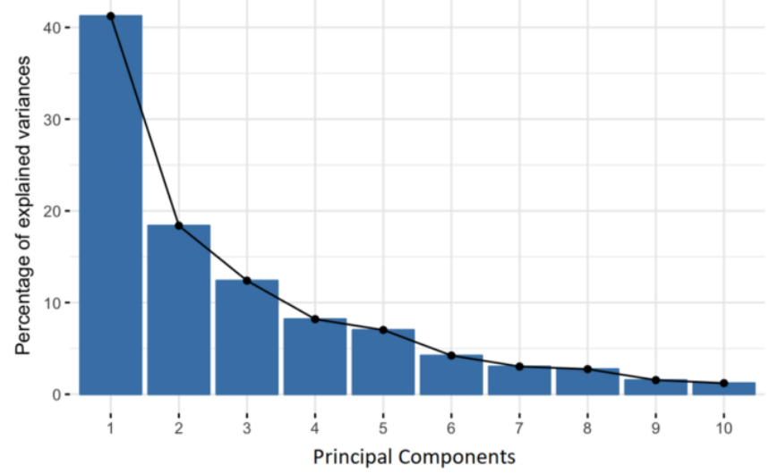
Exercícios
- Jupyter notebook
t-distributed Stochastic Neighbor Embedding (t-SNE)
- Preserva as estruturas locais
- Método de redução de dimensionalidade não linear
- Permite identificar padrões relevantes
- Visualização de dados
- Ajuda a avaliar a viabilidade da aplicação de aprendizado de máquina em dados
- Observação: o UMap é um algoritmo equivalente ao t-SNE, também utilizado em visualização de dados
t-SNE - Intuição
- Estima a distribuição de probabilidade de vizinhança em torno de cada ponto
- Busca minimizar as diferenças entre as distribuições de dois pontos para distribuí-los em um espaço 2D
- O principal parâmetro do algoritmo é a perplexidade, que equivale ao número de vizinhos considerados (geralmente entre 5 e 50) pelo algoritmo
- Uma perplexidade baixa significa que o foco está nas vizinhanças locais
- Uma perplexidade alta significa que o foco está nas vizinhanças mais amplas
t-SNE

- https://www.each.usp.br/lauretto/cursoR2017/04-AnaliseCluster.pdf
- MIT6.034 Patrick H. Winston https://ocw.mit.edu/courses/6-034-artificial-intelligence-fall-2010/
- Stanford CS class CS231n: Convolutional Neural Networks for Visual Recognition http://vision.stanford.edu/teaching/cs231n
- [INFO - M1 MIAGE - S2] CM Intelligence artificielle
- [INFO - M1 MIAGE - S2] CM Analyse et visualisation de données